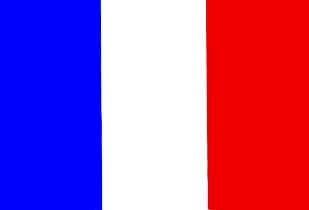
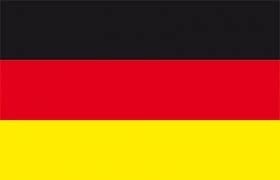
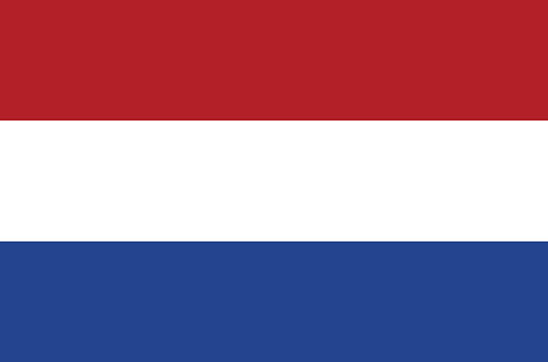
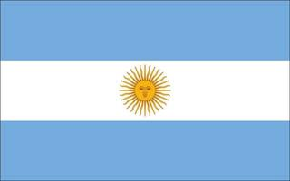

Il Pallone d'oro (Ballon d'Or, in francese), noto in precedenza anche come Calciatore europeo dell'anno, è un premio calcistico istituito nel 1956 dalla rivista sportiva francese France Football e assegnato annualmente al giocatore che più si è distinto nella stagione sportiva, militando in una squadra di un qualsiasi campionato del mondo.
I primi 3 classificati dell'edizione del 2022 sono:
I giocatori che hanno vinto più edizioni del Pallone d'oro sono:
| Nazioni | Giocatori | Totale |
|---|---|---|
| Francia  | 5 | 7 |
| Germania  | 5 | 7 |
| Paesi Bassi  | 3 | 7 |
| Portogallo |
3 | 7 |
| Argentina  | 1 | 7 |